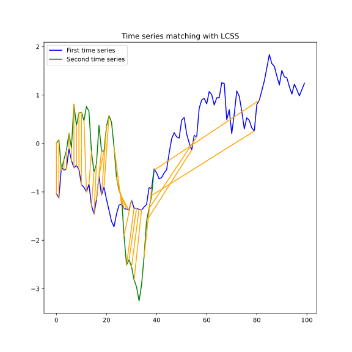
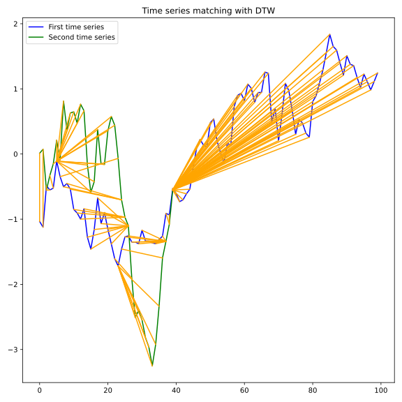

Note
Click here to download the full example code
Longest Common Subsequence¶
This example illustrates LCSS computation between time series and plots the alignment path [1]. and its relationship to the DTW.
Since LCSS focuses on the similar parts between two time-series, a potential use case is to identify the similarity between time-series whose lengths differ greatly or have noise. As one example, M. Vlachos et al. [1] used this method to cluster time series regarding human writing in the presence of noise.
The example demonstrates the use of the functions lcss_path and dtw_path to calculate the alignment path between them and compare the two approaches when dealing with unequal-length sequence data and noise.
[1] M. Vlachos, D. Gunopoulos, and G. Kollios. 2002. “Discovering Similar Multidimensional Trajectories”, In Proceedings of the 18th International Conference on Data Engineering (ICDE ‘02). IEEE Computer Society, USA, 673.
- 
- 
Out:
/Users/hong/miniconda3/envs/nas/lib/python3.7/importlib/_bootstrap.py:219: RuntimeWarning: numpy.ufunc size changed, may indicate binary incompatibility. Expected 192 from C header, got 216 from PyObject
return f(*args, **kwds)
# Author: Daniela Duarte
# License: BSD 3 clause
import numpy
import matplotlib.pyplot as plt
from tslearn.generators import random_walks
from tslearn.preprocessing import TimeSeriesScalerMeanVariance
from tslearn import metrics
numpy.random.seed(0)
n_ts, sz, d = 2, 100, 1
dataset = random_walks(n_ts=n_ts, sz=sz, d=d, random_state=5)
scaler = TimeSeriesScalerMeanVariance(mu=0., std=1.) # Rescale time series
dataset_scaled = scaler.fit_transform(dataset)
lcss_path, sim_lcss = metrics.lcss_path(dataset_scaled[0, :, 0], dataset_scaled[1, :40, 0], eps=1.5)
dtw_path, sim_dtw = metrics.dtw_path(dataset_scaled[0, :, 0], dataset_scaled[1, :40, 0])
plt.figure(1, figsize=(8, 8))
plt.plot(dataset_scaled[0, :, 0], "b-", label='First time series')
plt.plot(dataset_scaled[1, :40, 0], "g-", label='Second time series')
for positions in lcss_path:
plt.plot([positions[0], positions[1]],
[dataset_scaled[0, positions[0], 0], dataset_scaled[1, positions[1], 0]], color='orange')
plt.legend()
plt.title("Time series matching with LCSS")
plt.figure(2, figsize=(8, 8))
plt.plot(dataset_scaled[0, :, 0], "b-", label='First time series')
plt.plot(dataset_scaled[1, :40, 0], "g-", label='Second time series')
for positions in dtw_path:
plt.plot([positions[0], positions[1]],
[dataset_scaled[0, positions[0], 0], dataset_scaled[1, positions[1], 0]], color='orange')
plt.legend()
plt.title("Time series matching with DTW")
plt.tight_layout()
plt.show()
Total running time of the script: ( 0 minutes 3.669 seconds)